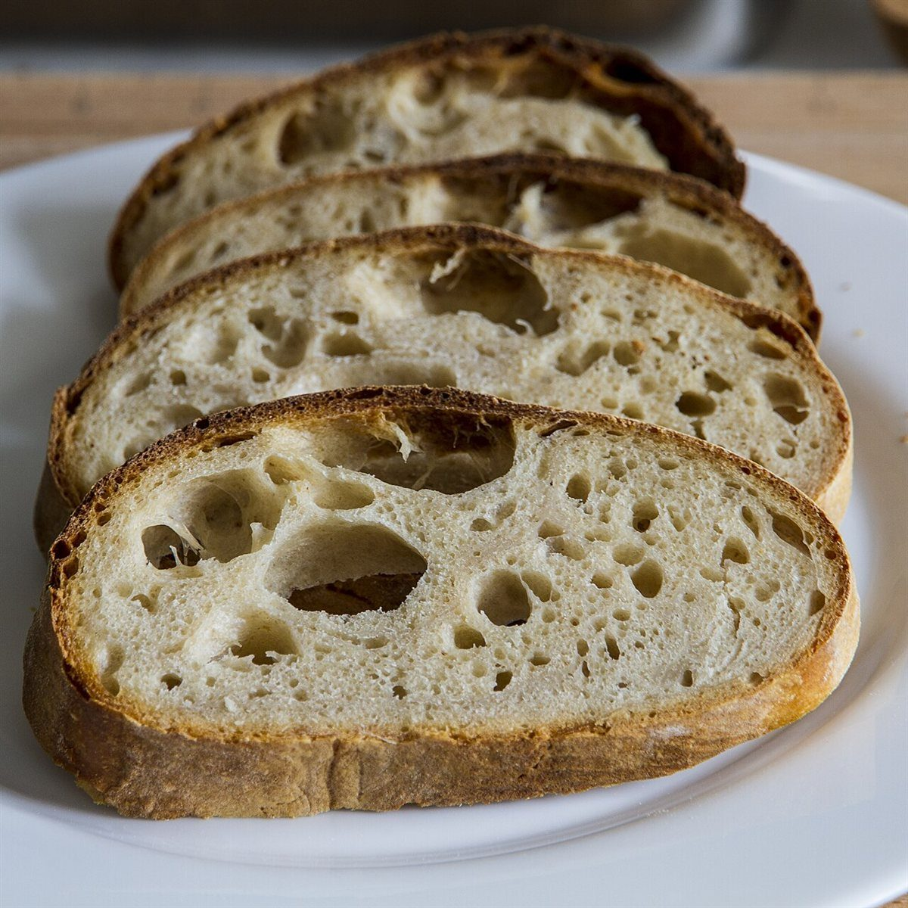
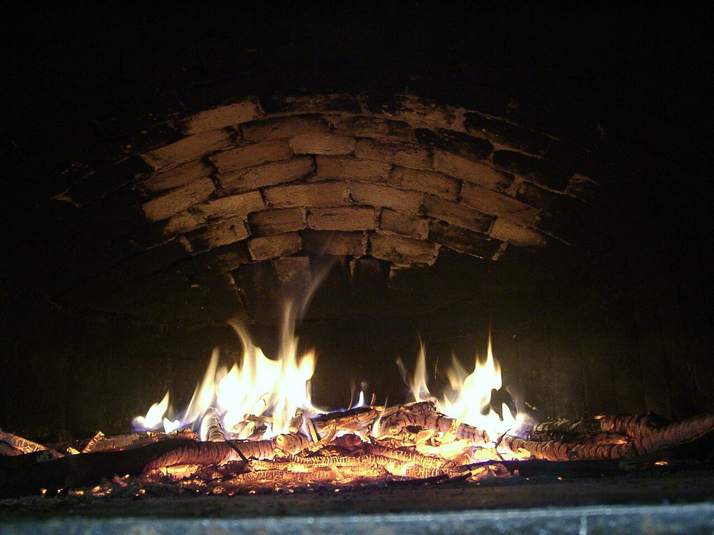

ベーカリー / 茨城県神栖市
BE COREビー・コア
茨城県神栖市にあるベーカリー「BE CORE」のご案内ページです。営業時間やメニューなど、詳しいことは準備中。まずはInstagramをのぞいてみてください。

制作側の連想
「CORE(核)」から地球の断面を連想しました
店名の由来や意味は分かりません。制作側は「CORE」という言葉から、地球の中心にある核を連想しました。そこで、このサイトは地球の層(地殻・マントル・外核・内核)を、ホームから順に深く潜っていく作りにしています。パンの皮や中身の断面に、ほんの少し重ねてみただけの、お店の理念・由来とは無関係な制作側の連想です。
0〜35km地殻
いちばん外側
いちばん外側の層(イメージ)
パンでいえば、いちばん外側の皮にあたる部分を思い浮かべました。写真は国外・撮影地不明のイメージで、お店のパンではありません。

35〜2,900kmマントル
厚い層
いちばん厚い層(イメージ)
地球でいちばん厚い層は、パンでいえば中身の断面にあたる、と見立てました。お店で提供しているパンを示すものではありません。


2,900〜5,150km外核
熱い層
炎の色の層(イメージ)
核のあたりは、とても熱い世界だそうです。パンを焼く窯の炎をイメージ写真で重ねました。お店の窯や設備とは関係ありません。


5,150〜6,371km内核
いちばん中心
いちばん中心の点(イメージ)
いちばん奥にある中心の核。このサイトでは、最後のアクセスページを中心に見立てています。写真は焼きあがりをイメージしたフリー素材です。

ご案内
お店のこと(確認できたものだけ)
| 所在地 | 〒314-0128 茨城県神栖市大野原中央５丁目４−６ |
|---|---|
| 電話 | なし |
| 営業時間 | 準備中 |
| 定休日 | 準備中 |
| ご予約 | 準備中 |
| 駐車場 | 準備中 |
| SNS | Instagram @becore.25111 |